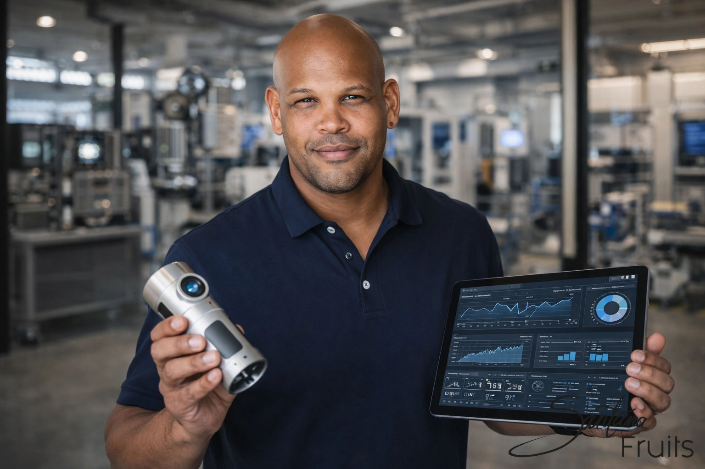

Willkommen zurück zu meiner Reise.
In den letzten Teilen habe ich euch erzählt, wie meine Zeit bei Saturn meinen Blick auf die Welt verändert hat und wie ich mich durch die Weiterbildung zum Handelsfachwirt und die Führungsposition bei MediaMarkt in Esslingen auf das Unternehmertum vorbereitet habe.
Doch es gab einen entscheidenden Bereich, den ich noch meistern musste, bevor Santana Fruits überhaupt Realität werden konnte:
👉 Den echten, harten Vertrieb im Außendienst.
Man sagt oft, dass man zum Verkäufer geboren wird. Ich glaube jedoch, dass man im Vertrieb vor allem eines lernt: Zuzuhören.
Und genau diese Lektion begann mit einem Kunden, der eigentlich nur eines wollte: seinem Ärger Luft machen.
Es war ein ganz normaler Tag bei MediaMarkt. Die Gänge waren voll, das Telefon stand nicht still – und wie es im Einzelhandel so ist, passierte alles gleichzeitig.
Dann stand er vor mir. Ein Kunde. Nicht einfach unzufrieden – sondern geladen. Reklamation. Gerät defekt. Frust.
In solchen Momenten gibt es zwei Arten von Verkäufern:
Ich entschied mich für Letzteres. Ich hörte zu. Ich ließ ihn ausreden. Ich suchte keine Ausreden – sondern eine Lösung. Wir fanden sie.
Und plötzlich war die Situation eine andere. Der Kunde war ruhig. Dann beeindruckt.
Dann kam der Satz, der alles veränderte:
„Kenny, so jemanden wie dich brauche ich in meinem Team."
Er reichte mir seine Visitenkarte. Geschäftsführer eines Sensorik-Unternehmens. Der Einstieg in eine völlig neue Welt.
Ich nahm die Herausforderung an. Plötzlich war ich nicht mehr im Markt, sondern im Außendienst. Dienstwagen. Autobahn. Termine.
Mein neues Produkt? 👉 Hochpräzise Sensoren für Pellet-Heizsysteme.
Der Wechsel von B2C zu B2B war brutal ehrlich:
Du musstest alles selbst aufbauen. Bedarf. Vertrauen. Verständnis.
Ich lernte, mit Heizungsbauern, Ingenieuren und Großhändlern auf Augenhöhe zu sprechen. Keine Emotionen. Nur Fakten, Technik und Nutzen. Das war die echte Vertriebsschule.
Im technischen Vertrieb gibt es keine Ausreden. Wenn du dein Produkt nicht verstehst, bist du raus. Du musst wissen: wie es funktioniert, wann es versagt, warum es besser ist.
Genau das gilt heute bei Santana Fruits. Wer Rohkakao kaufen will, braucht Analysewerte, Herkunft und Verlässlichkeit. Unsere Trinitario Kakaobohnen liefern genau das.
Im Außendienst lernst du schnell: Ein „Nein" bedeutet oft nur:
👉 „Ich habe noch nicht genug Informationen."
Wer hier aufgibt, verliert. Wer fragt, gewinnt. Das ist heute ein zentraler Teil unseres Direct Trade Ansatzes.
Ablehnung gehört dazu. Jeden Tag. Der Außendienst härtet dich ab.
Und genau diese Stärke brauchst du im globalen Handel: Lieferketten brechen, Märkte schwanken, Erwartungen steigen. Nur wer stabil bleibt, gewinnt.
Vertrieb ist kein Abschluss. Vertrieb ist Vertrauen.
Ich war unterwegs auf Baustellen, in Werkstätten, in Büros. Ich habe gelernt:
👉 Du verkaufst kein Produkt – du verkaufst dich als Lösung.
Heute ist es genau dasselbe. Wenn wir mit Einkäufern sprechen, geht es nicht nur um Preis. Es geht um Verlässlichkeit, Qualität und Partnerschaft.
Santana Fruits steht heute für:
Für den Kakaobohnen Großhandel ist das entscheidend. Wir liefern nicht nur Ware.
👉 Wir liefern Sicherheit.
Trotz Erfolg im Vertrieb blieb ein Gedanke: Was, wenn ich diese Fähigkeiten für etwas Größeres nutze? Für meine Herkunft. Für echte Wirkung.
Ich hatte alles gelernt: Vertrieb, Führung, Technik, Logistik. Ich war bereit.
Doch der nächste Schritt führte mich nicht zu einem Kunden.
👉 Sondern zurück in die Dominikanische Republik.
Im nächsten Teil erzähle ich euch von meiner Rückkehr in meine Heimat. Von Emotionen. Von Realität. Und von Entscheidungen, die alles verändert haben.
Bis nächsten Sonntag.
Euer Kenny
CEO, Santana Fruits
Für Rohkakao kaufen, Trinitario Kakaobohnen, Kakao aus der Dominikanischen Republik oder Direct Trade Kakao:
📩 Schreib uns direkt für Container-Anfragen (bis zu 25 Tonnen/Monat).
Santana Fruits – vom Ursprung bis zu dir.
Dieser Blogbeitrag ist Teil meiner persönlichen Serie über den Aufbau von Santana Fruits. Jeden Sonntag um 19:00 Uhr teile ich ein neues Kapitel meiner Reise mit euch.